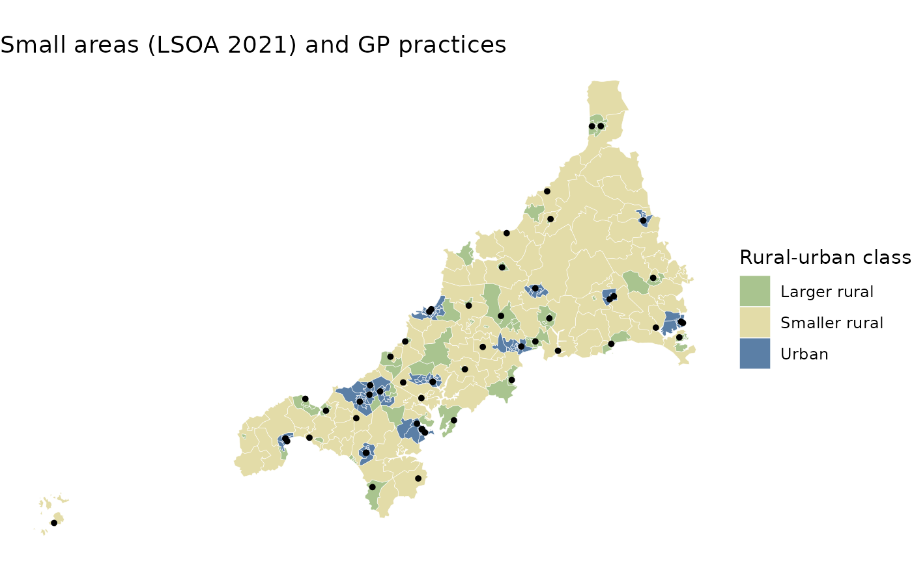
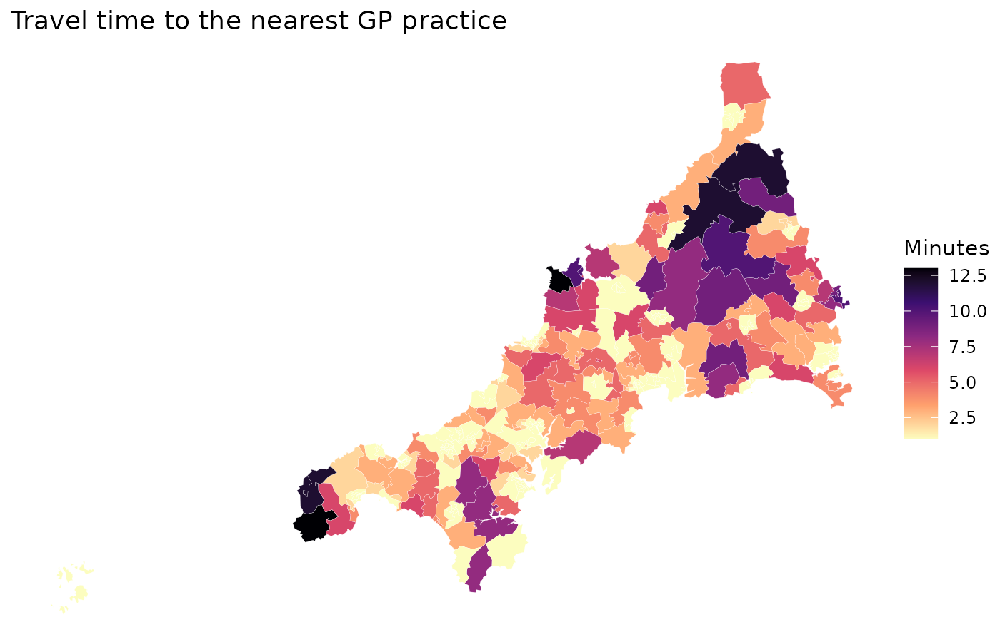
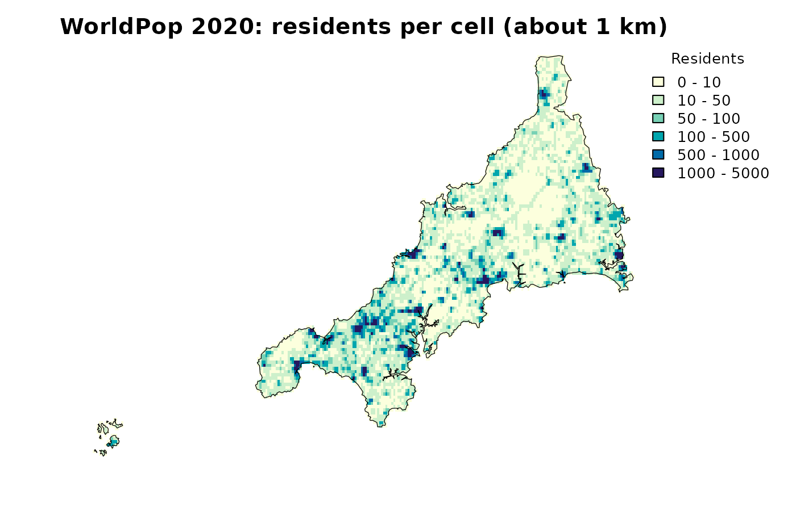

spax ships open data for general practice (GP) care in NHS Cornwall and Isles of Scilly, in south-west England. The guides use them, so this page introduces each object once: what it holds, how the objects fit together and what they cannot tell you. Nothing needs downloading.
| Object | What it holds | How to load it |
|---|---|---|
cornwall_gp |
55 GP practices: location, GP workforce and list size | Loaded with spax |
cornwall_lsoa |
337 small areas: boundaries, population and registered residents | Loaded with spax |
cornwall_flows |
Registered residents by small area and practice | Loaded with spax |
cornwall_travel |
Travel minutes from each small area to each practice | Loaded with spax |
cornwall_pop.tif |
Population grid, about 1 km cells | read_spax_example() |
cornwall_gp_travel.tif |
Travel minutes from each grid cell to each practice | read_spax_example() |
Each object has a help page with every column, for example
?cornwall_gp.
Practices
cornwall_gp is an sf point layer in British
National Grid coordinates (EPSG:27700), one row per practice.
practice is the NHS practice code, which links the
practices to the flows and to the travel times.
gp <- st_drop_geometry(cornwall_gp)
gp |>
select(practice, name, gp_fte_extg, gp_fte, list_size) |>
head() practice name gp_fte_extg gp_fte list_size
1 L82001 LANDER MEDICAL PRACTICE 10.298887 12.858887 19477
2 L82003 PORT ISAAC SURGERY 4.693333 5.546667 8738
3 L82004 WADEBRIDGE & CAMEL ESTUARY PRACTICE 4.341333 5.194667 8045
4 L82006 PENRYN SURGERY 7.973333 9.893333 20089
5 L82007 CAMELFORD MEDICAL CENTRE 2.888800 2.888800 6658
6 L82008 STRATTON MEDICAL CENTRE 4.670400 6.377067 10746The guides use gp_fte_extg as supply: full-time
equivalent GPs (37.5 hours a week) excluding GPs in training, from the
June 2026 workforce data. GPs in training are left out because their
recording changed in June 2018 and they cluster in training practices;
gp_fte includes them. list_size counts all
patients registered at the practice. Each practice is placed at its main
site; branch surgeries are not represented.
Small areas
cornwall_lsoa holds the 337 Lower layer Super Output
Areas (LSOA 2021), small areas of about 1,000 to 3,400 residents. Each
has an ONS mid-2024 population estimate (pop, also by age
band) and the number of its residents registered at any GP practice in
England (registered). That number splits into residents
registered at a practice in Cornwall and the Isles of Scilly
(registered_in) and those registered elsewhere
(registered_out).
areas <- st_drop_geometry(cornwall_lsoa)
# Registered residents split into inside and outside the area's practices
stopifnot(all(areas$registered == areas$registered_in + areas$registered_out))
c(
small_areas = nrow(areas),
population = sum(areas$pop),
registered = sum(areas$registered),
registered_outside = sum(areas$registered_out)
) small_areas population registered registered_outside
337 585655 606796 5527
Larger rural Smaller rural Urban
81 103 153 Registered counts exceed the population estimates by about 4%, reflecting list inflation and the different reference dates. The map shows the small areas by broad rural-urban class, with the practices on top.
# Small areas with a broad rural-urban class
classed <- cornwall_lsoa |>
mutate(class = sub(":.*", "", ruc21))
ggplot() +
geom_sf(
data = classed,
aes(fill = class),
colour = "white",
linewidth = 0.1
) +
geom_sf(data = cornwall_gp, size = 1) +
scale_fill_manual(
name = "Rural-urban class",
values = c(
Urban = "#5b7fa6",
`Larger rural` = "#a9c48f",
`Smaller rural` = "#e3dca8"
)
) +
labs(title = "Small areas (LSOA 2021) and GP practices") +
theme_void()
The Isles of Scilly are the small group of islands off the western tip.
Registrations
cornwall_flows counts the residents of each small area
registered at each of the 55 practices, one row per pair that has at
least one registration.
head(cornwall_flows) lsoa practice patients
1 E01018750 L82012 2185
2 E01018750 L82016 35
3 E01018750 L82025 1
4 E01018750 L82046 4
5 E01018750 L82066 1
6 E01018751 L82012 1691
# Row totals of the flows are the residents registered in the area
by_area <- tapply(cornwall_flows$patients, cornwall_flows$lsoa, sum)
stopifnot(all(by_area[areas$lsoa] == areas$registered_in))
c(
pairs = nrow(cornwall_flows),
registered_residents = sum(cornwall_flows$patients)
) pairs registered_residents
3188 601269 A registration is a stock: who is registered with
which practice at one date (July 2026). It is not a count of visits and
says nothing about how often people use their practice. Residents
counted in registered_out are registered with a practice
outside Cornwall and the Isles of Scilly, for example in Devon; they are
not people without a practice. The allocation guides fit a model to
these registrations; the FCA guides do not use them.
Travel times
cornwall_travel is a matrix of motorised travel minutes
from each small area’s population-weighted centroid (rows,
cornwall_lsoa$lsoa) to each practice’s main site (columns,
cornwall_gp$practice).
cornwall_travel[1:3, 1:4] L82001 L82003 L82004 L82006
E01018750 67 49 46 78
E01018751 67 49 46 78
E01018752 68 49 47 79
# Minutes from each small area to its nearest practice
nearest <- apply(cornwall_travel, 1, min, na.rm = TRUE)
summary(nearest) Min. 1st Qu. Median Mean 3rd Qu. Max.
1.000 1.000 1.000 2.564 3.000 13.000 The times are least-cost paths through a 2019 global friction surface with cells of about 1 km. They are rounded to whole minutes with a floor of one minute, so at least half of the small areas have a nearest practice at 1 minute. Traffic is not modelled, and in towns several practices can share one cell.
# Join each area's nearest-practice time to its polygon
nearest_map <- cornwall_lsoa |>
mutate(minutes = nearest[lsoa])
ggplot(nearest_map) +
geom_sf(aes(fill = minutes), colour = "white", linewidth = 0.05) +
scale_fill_viridis_c(name = "Minutes", option = "magma", direction = -1) +
labs(title = "Travel time to the nearest GP practice") +
theme_void()
The grids
Two GeoTIFF files cover the same 30 arc-second grid (about 1 km, in
longitude and latitude). cornwall_pop.tif holds WorldPop
2020 estimated residents per cell: a count, not a
density. cornwall_gp_travel.tif holds one layer of travel
minutes per practice, named by practice code.
read_spax_example() reads both.
pop <- read_spax_example("cornwall_pop.tif")
travel_grid <- read_spax_example("cornwall_gp_travel.tif")
c(
cells = ncell(pop),
populated_cells = sum(!is.na(values(pop))),
travel_layers = nlyr(travel_grid),
grid_residents = round(global(pop, "sum", na.rm = TRUE)[[1]]),
ons_residents = sum(areas$pop)
) cells populated_cells travel_layers grid_residents ons_residents
35772 6985 55 542666 585655
plot(
pop,
breaks = c(0, 10, 50, 100, 500, 1000, 5000),
col = hcl.colors(6, "YlGnBu", rev = TRUE),
axes = FALSE,
main = "WorldPop 2020: residents per cell (about 1 km)",
plg = list(title = "Residents")
)
The grid total is about 7% below the ONS mid-2024 estimate used in
cornwall_lsoa. The two are different sources and dates;
choose one for an analysis and say which. The FCA guides use the grid;
the allocation guides use registered residents of the small areas.
In the travel grid, NA marks unpopulated cells, pairs
with no road connection and journeys over 180 minutes.
The Isles of Scilly and the mainland
The Isles of Scilly have one small area and one practice, St Mary’s
Health Centre (L82017). The road-based travel times cannot
cross the sea, so the islands and the mainland cannot reach each other:
their travel times are NA.
# Unknown travel times in the small-area matrix: the Scilly area's row and
# the Scilly practice's column
c(
unknown = sum(is.na(cornwall_travel)),
scilly_area = sum(is.na(cornwall_travel[areas$scilly, ])),
scilly_practice = sum(is.na(cornwall_travel[, gp$scilly]))
) unknown scilly_area scilly_practice
390 54 336 The islands do have access to the mainland, by boat and air, which
these travel times do not represent. Rather than treat the islands as
cut off, the guides model mainland Cornwall only: 336
small areas and 54 practices, selected with the scilly
column.
mainland_areas <- filter(areas, !scilly)
mainland_gp <- filter(gp, !scilly)
c(small_areas = nrow(mainland_areas), practices = nrow(mainland_gp))small_areas practices
336 54 In the allocation guides, mainland residents registered with the Scilly practice or outside Cornwall therefore count as registered outside mainland Cornwall. Preparing your own data shows what the unknown travel times do to an FCA index if the islands are kept.
Sources, dates and licences
| Data | Objects | Source and date | Licence |
|---|---|---|---|
| Registrations |
cornwall_gp, cornwall_lsoa,
cornwall_flows
|
NHS England, Patients Registered at a GP Practice, July 2026 | Open Government Licence v3.0 |
| GP workforce | cornwall_gp |
NHS England, General Practice Workforce, 30 June 2026 | Open Government Licence v3.0 |
| Practice locations | cornwall_gp |
ONS Postcode Directory, November 2025 | Open Government Licence v3.0; contains OS and Royal Mail data |
| Boundaries, centroids, population | cornwall_lsoa |
ONS LSOA 2021 boundaries and rural-urban classification, population-weighted centroids, mid-2024 population estimates | Open Government Licence v3.0; contains OS data |
| Population grid | cornwall_pop.tif |
WorldPop, 2020 UN-adjusted 1 km estimates | Creative Commons Attribution 4.0 |
| Travel times |
cornwall_travel,
cornwall_gp_travel.tif
|
Derived by the package author from the Malaria Atlas Project 2019 motorised friction surface (Weiss et al. 2020) | Creative Commons Attribution; version not yet confirmed |
The package’s MIT licence does not cover these data. Keep the dates in mind when reading results: the registrations and the workforce are from 2026, the population grid from 2020, the small-area population from mid-2024 and the road network from about 2019. The full attributions, with the required wording for each source, are installed with the package:
file.show(system.file("COPYRIGHTS", package = "spax"))